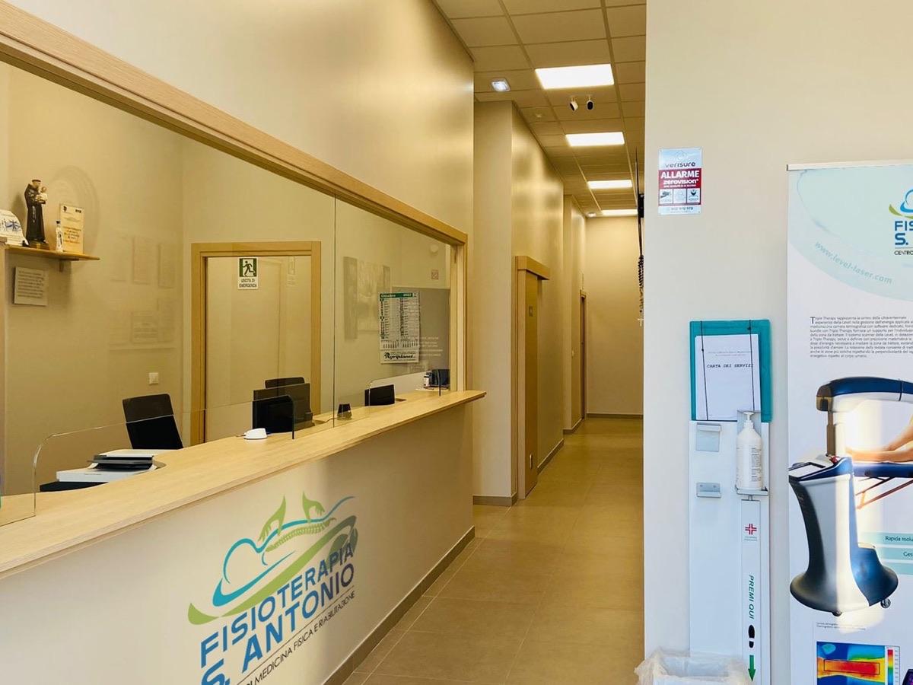

G2 Medica
Via E. A. Pantano 107 · Catania
Fisiatria interventistica · Ecografia muscoloscheletrica
Valutazione clinica, ecografia e trattamenti mirati, spiegati con chiarezza per rendere il paziente parte attiva del proprio percorso.

Prestazioni principali
Ogni procedura viene proposta solo quando appropriata, considerando evidenze scientifiche, obiettivi e probabilità di beneficio per il singolo paziente.
Una valutazione completa per comprendere la patologia, gli esami già svolti e le possibili strategie.
Un esame dinamico disponibile come prestazione autonoma o a completamento della visita quando indicato.
Procedure endoarticolari ecoguidate con steroide o acido ialuronico, dopo un'attenta selezione clinica.
Trattamento inserito in un percorso che considera diagnosi, carichi, esercizio e tempi biologici.
Il metodo
La visita non termina con un nome scritto su un referto. Serve a capire cosa sta succedendo, quali possibilità esistono e quale parte del lavoro spetta al medico e quale al paziente.
Scopri come si svolge la visitaDove ricevo
Le prestazioni possono essere prenotate attraverso MioDottore. Disponibilità e dettagli aggiornati restano sempre consultabili sul profilo.
Via E. A. Pantano 107 · Catania
Via Giuseppe Bonaventura 56 · Randazzo

Viale Regina Margherita 31 · Bronte

Via Enna 46 · San Giovanni Gemini
Opinioni dei pazienti
Attenzione durante la visita, spiegazioni dettagliate e puntualità sono gli aspetti più menzionati dai pazienti su MioDottore.
Leggi tutte le recensioniIl widget viene caricato automaticamente da MioDottore. Aprendo il profilo o interagendo con il riquadro si prosegue sul servizio esterno. Come vengono trattati i dati.
Aggiornamento e formazione
Accanto all'attività clinica, partecipo alla formazione medica in ecografia diagnostica muscoloscheletrica e fisiatria interventistica. Un impegno che mantiene metodo e pratica in dialogo costante con le evidenze scientifiche.
Il prossimo passo